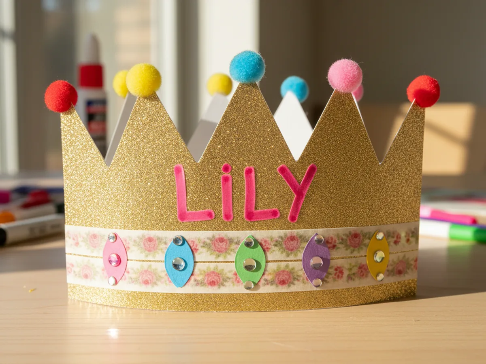
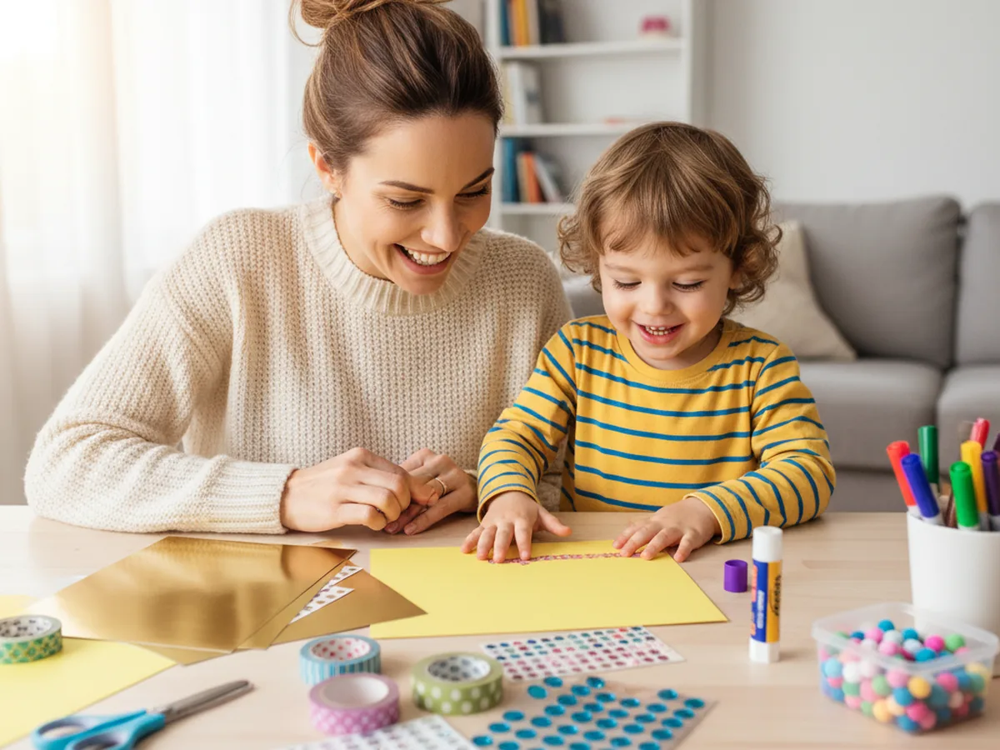
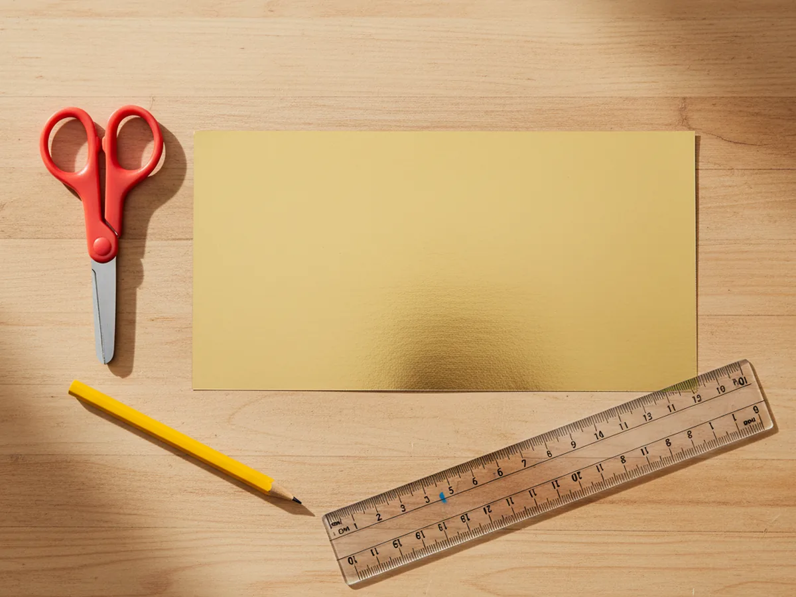
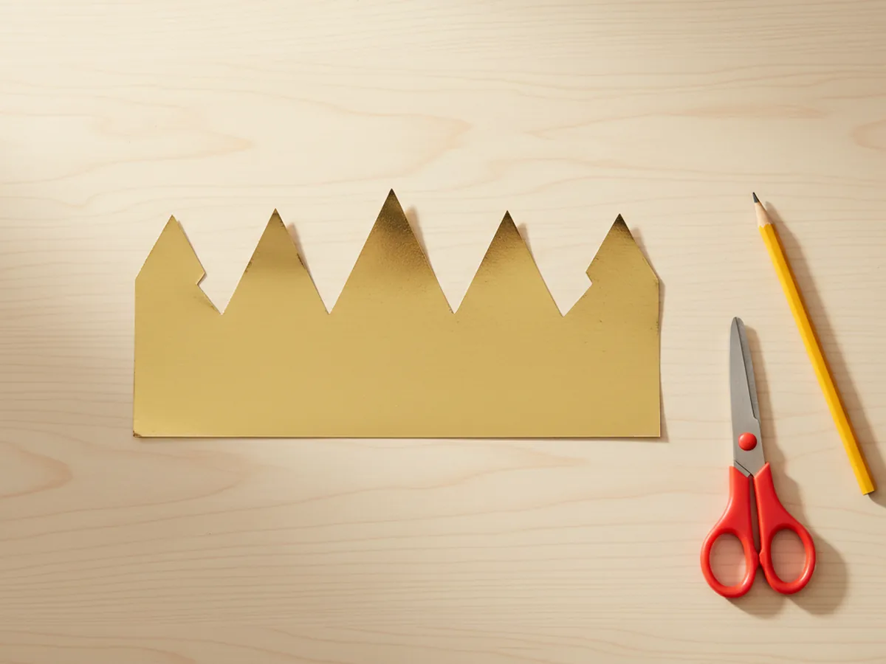
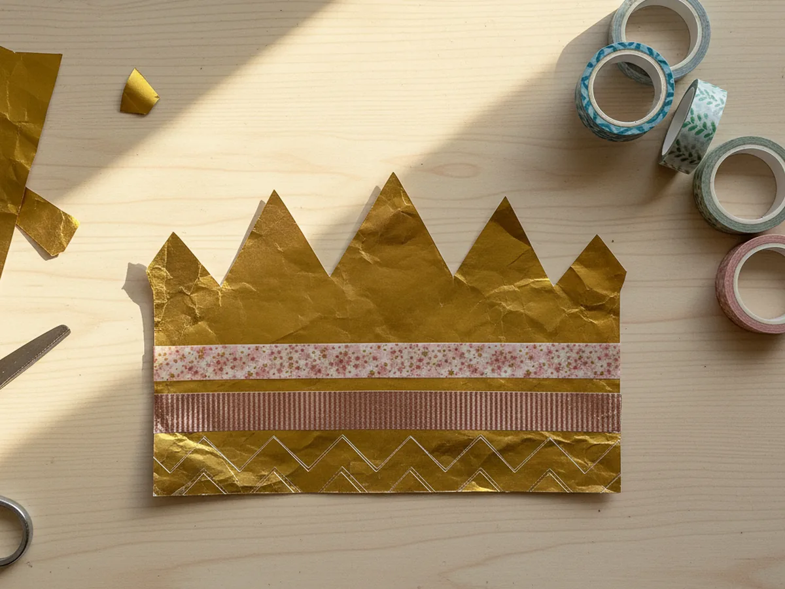
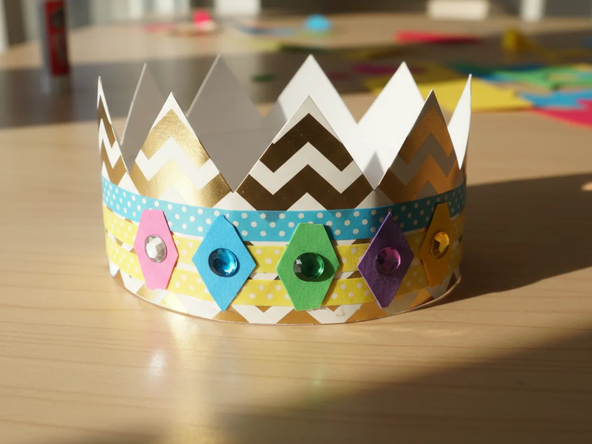
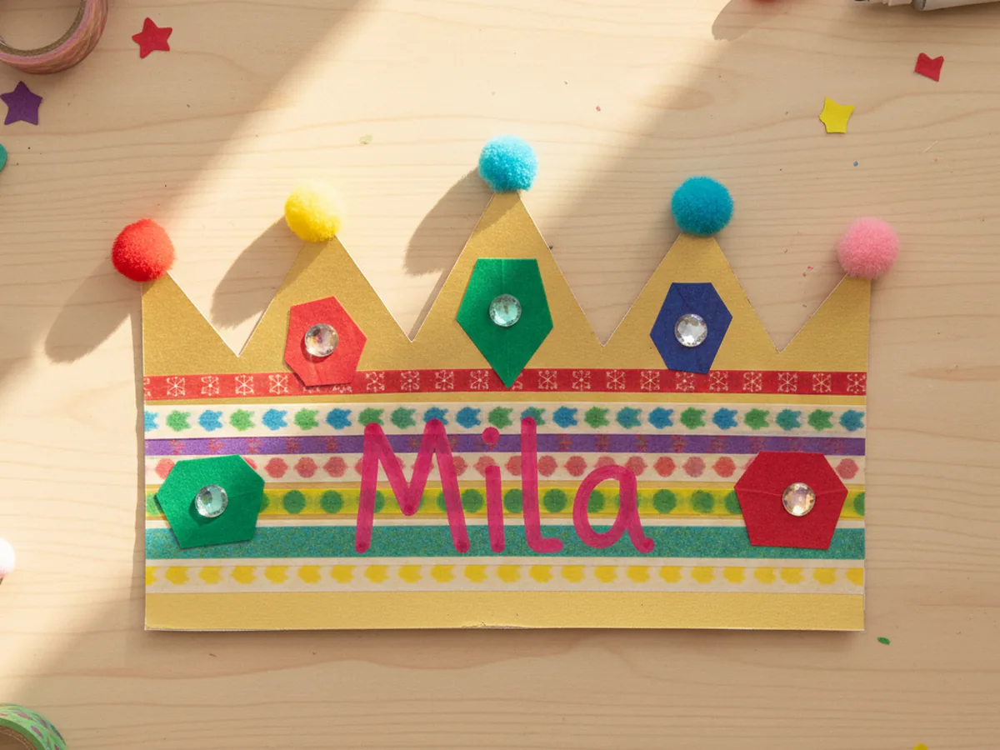
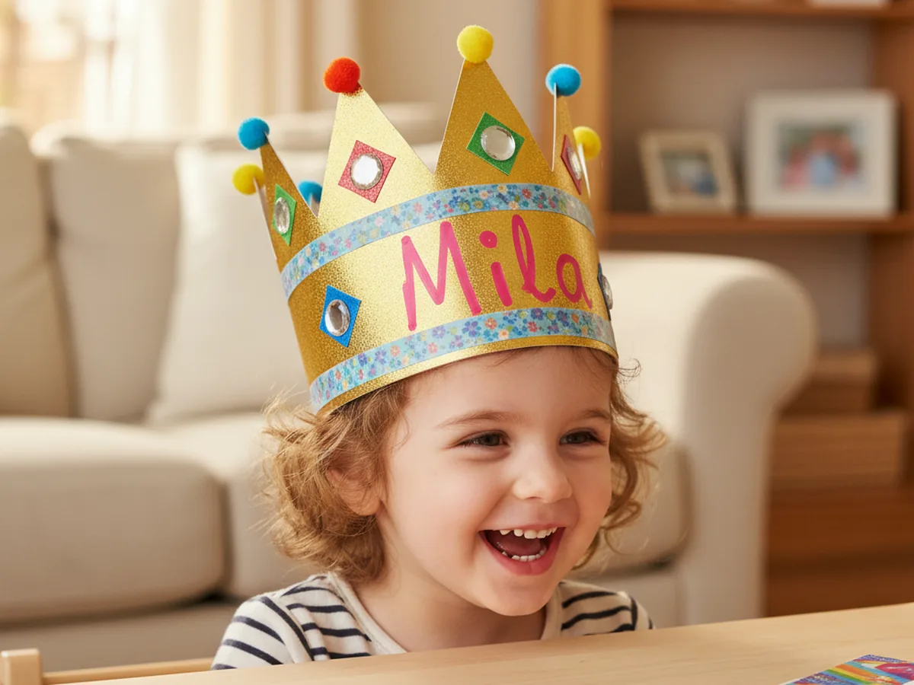

If a birthday is coming up at your house, this birthday paper craft is the sweetest little project to make with your child the day before, the morning of, or even right in the middle of the party. With one sheet of cardstock, a few rolls of washi tape, and about 30 minutes at the kitchen table, the two of you can build a sparkly paper crown your child will wear all day long. 👑
The best part is that this DIY birthday crown is so beginner-friendly there is nothing fragile, nothing fussy, and nothing to fail. Every gem, every pom pom, and every marker scribble makes it more special, not less. Your child will end up with a crown that says "this is my day" louder than any store-bought hat ever could.
Why Kids Love This Craft
Kids love feeling like the most important person in the room, and on a birthday that is exactly how it should be. A handmade birthday paper craft crown gives your child a little visual badge of honor for their special day, and they get to help make it. Watching a flat strip of cardstock transform into something they can actually wear is genuinely magical for a young child.
This project also slips in lots of quiet skill-building without ever feeling like a lesson. Cutting the zigzag crown points strengthens scissor control. Peeling and pressing tiny gem stickers is wonderful fine motor practice. Choosing which colors go where, where to put each jewel, and what name or number to write trains independent thinking and creative decisions. Best of all, every choice they make turns the crown into something distinctly theirs.
And then there is the joy of wearing it. A finished paper birthday crown almost always becomes the favorite accessory of the day. Kids will wear it through cake, through gift opening, through bath time if you let them. The smile when they catch their reflection wearing something they made themselves is the whole point. 💛

What You'll Need
Here is everything you need to make this birthday paper craft together at home. Set out the supplies before you call your child over so the whole project flows easily without anyone needing to hop up halfway through.
- Astrobrights Colored Cardstock Primary 5-Color Assortment, sturdy 65 lb cardstock that holds its crown shape without flopping.
- Crayola Construction Paper (240 Sheets, 12 Colors), great for cutting bright little paper jewels in every color.
- Elmer's Disappearing Purple Washable Glue Sticks (18 Pack), easy clean gluing that little hands can handle without a mess.
- Fiskars 5 Inch Pointed-Tip Kids Scissors, safe blades that cut crisp zigzag points on cardstock.
- Washi Tape Set of 10 Cute Rose Gold Foil Rolls, the secret sparkly band that makes the crown look fancy fast.
- MYDBUYSOME Self-Adhesive Rhinestone Gem Stickers (2774 Pieces), instant bling that peels and presses on without any glue.
- Fun Express Tiny Pom Poms (500 Pieces), fluffy little dots that finish off the tip of each crown point.
- Crayola Broad Line Markers (10 Classic Colors), for writing the birthday name or the new age in big proud letters.
- A pencil and a ruler, for marking the zigzag line cleanly before cutting.
- Clear tape, for closing the crown into a ring once it fits the head.
Step-by-Step Instructions
This birthday paper craft is genuinely forgiving from beginning to end, so go slow, let your child make every fun decision, and enjoy the build. ✨
Step 1: Cut the Crown Base Strip
Start by cutting one long rectangle of gold or bright yellow cardstock to be the base of the paper birthday crown. Cut it about 4 inches tall and 20 inches wide. If your cardstock is the standard letter size, just cut two strips 4 inches tall and tape them together end to end to reach the full length. Lay the long strip flat on the table so your child can see the whole canvas they are about to decorate.
This is a great moment to let your child pick the color. Gold and yellow look classic and royal, but a bright pink, soft lavender, or sky blue crown is just as fun if your child wants something different.

Step 2: Cut the Zigzag Crown Points
Now turn the plain strip into a real crown shape. Use a pencil and a ruler to lightly draw a zigzag line across the top edge of the strip. Aim for points that are about 2 inches tall and 2 inches wide, so you get five or six clean triangles across the front of the crown. Then let your child carefully cut along the pencil line with their kid scissors. Each snip turns the rectangle into a true birthday crown craft shape.
If your child is younger, you can do the pencil line and the first cut, then hand the scissors over to finish the rest. Slightly uneven points only add to the handmade charm.

Step 3: Decorate the Middle Band With Washi Tape
Time for sparkle. Pick out two or three pretty rolls of washi tape and stick a clean strip straight across the middle of the crown, running from one short end to the other. Add a second strip just below or just above the first so you get a pretty colorful band wrapping the whole crown. The washi tape instantly turns the plain cardstock into a fancy kids paper crown with a real bakery box feel.
Let your child choose which patterns go where. Mixing florals with stripes or polka dots is part of the fun, so do not aim for matching. The more personal, the better.

Step 4: Add Paper Jewels and Gem Stickers
Cut a handful of small jewel shapes from bright construction paper. Simple ovals, circles, and diamond shapes are easiest. Glue four or five of these paper jewels along the front of the crown, spaced evenly between the washi tape stripes. Then peel a few self-adhesive rhinestone stickers and press one right in the middle of each paper jewel. The combination of paper plus real bling makes your paper birthday craft sparkle from across the room.

Step 5: Add the Birthday Name and Pom Pom Tips
This is the most personal step. Use a bright marker to write the birthday child's name in big bouncy letters across the very front center of the crown. If they are old enough to write their own name, even better. Then dab a small dot of glue on the very tip of each zigzag point and press a tiny pom pom on top so each spike has a fluffy little ball. Your handmade birthday crown now has a name, a sparkle, and a finishing touch.
For a birthday number crown instead, write the new age in the middle and decorate the rest with little doodles, hearts, or stars. Whatever your child wants.

Step 6: Wrap, Fit, and Tape the Crown Closed
Time to make it wearable. Gently curve the long crown into a ring with the decorated side facing out, and wrap it loosely around your child's head. Overlap the two short ends until the crown sits snug but comfortable, not tight. Hold the overlap in place, take the crown off, and run a strip of clear tape down the inside of the seam so the closure does not show. Slide the finished birthday paper craft back onto your child's head and watch the smile happen. 🎂
This is the moment you both look at each other and grin. Take a picture before the cake gets eaten, before the gifts get torn open. This is a sweet little memory worth saving.

Variations to Try
Number Age Crown: Skip the name and write the new age in the very center of the crown in giant marker, like a big "4" or "5". This turns the craft into a perfect photo prop for the birthday morning and a cute keepsake you can date and save.
Tissue Paper Mosaic Crown: Instead of washi tape and gems, let a younger child glue torn squares of tissue paper all over the front of the crown in a confetti pattern. This version is wonderful for toddlers who love sticky and crinkly textures and want a low pressure craft.
Princess and Pirate Versions: Soften the zigzag into a wavy tiara shape for a princess crown, or cut a single large square notch on each side and add a paper skull for a pirate captain crown. Same craft, totally different birthday vibe depending on the child.
Final Thoughts
This birthday paper craft is one of those projects that ends up meaning more than you expected. The crown takes 30 minutes to make, costs almost nothing, and gives your child a wearable little symbol of their special day. The picture of them in this handmade crown will probably be the photo you go back to a year from now, smiling at how small they were and how proud they looked.
If your little one loved making this paper birthday crown, save the tutorial on Pinterest so you can come back the next time a birthday rolls around. Happy crafting, friend.
More Crafts You'll Love
If your child enjoyed making this birthday crown, they will love these other sweet paper projects next: